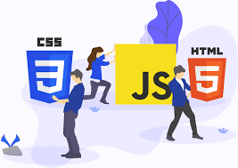

Frontend

El desarrollo web front-end consiste en la conversión de datos en una interfaz gráfica para que el usuario pueda ver e interactuar con la información de forma digital usando HTML, CSS y JavaScript
Licenciatura en sistemas computacionales
© Copyright 2023. Jair Hernández Trujillo